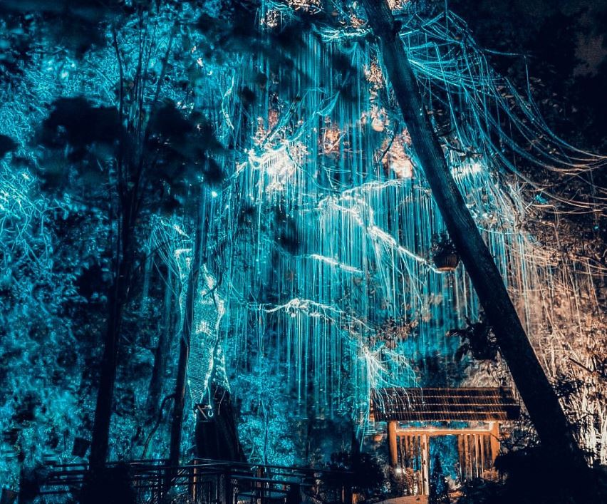

Penang Avatar Garden

Penang Kek-Lok-Si-Temple

Penang Historic Building
檳城是由1786年英國東印度公司萊特(Francis Light) 先生所開闢，融合英國殖民、馬來人、華人、印度人，此處是個不折不扣的文化大鎔爐，首府喬治市(Georgetown) 是古代船隻的加油站，也是印度香料及中國茶葉、棉花等商品的交易中心。 檳城迷人的海灘和懷古風情，使檳城擠身為世界知名的度假勝地。